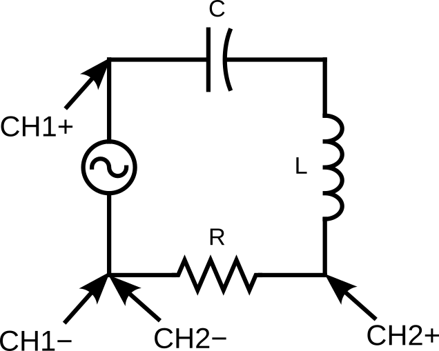

Lab 10 : RLC Circuit Resonance
Seneca College SES250 Electromagnatics
Purposes
- To examine the AC response of an RLC circuit and find the resonance frequency
Objectives
- Assemble electronic components onto a breadboard
- Setup function generator to output AC sine wave
- Build an RLC circuit for resonant frequency measurement
Description
An RLC circuit is an electrical circuit consisting of a resistor (R), an inductor (L), and a capacitor (C), connected in series or in parallel. The circuit forms a harmonic oscillator for current and resonates in a manner similar to an LC circuit. Introducing the resistor increases the decay of these oscillations, which is also known as damping. The resistor also reduces the peak resonant frequency.
An important property of this circuit is its ability to resonate at a specific frequency, the resonance frequency, . Its angular frequency alternative, , is given as:
The resonant frequency is defined as the frequency at which the impedance of the circuit is at a minimum. Equivalently, it can be defined as the frequency at which the impedance is purely real (that is, purely resistive). This occurs because the impedances of the inductor and capacitor at resonant are equal but of opposite sign and cancel out. The resonant frequency for an RLC circuit is:
Source: Wikipedia: RLC circuit
Reference
Materials
- Safety glasses (PPE)
- Lab Supplies
- Breadboard
- Jumper Wires
- (1x) 10kΩ resistor (brown-black-orange)
- (1x) 100nF Ceramic Capacitor
- (1x) 100μH toroidal inductor (supplied by the instructor)
Preparation
Lab Preparation Question:
- Read and summarize the lab as necessary.
- Copy observation Table 1 of this lab into your notebook.
- Sketch a breadboard diagram of Figure 10.1 onto your notebook.
- Calculate the theoretical resonant frequency for a series RLC circuit in AC with a 10kΩ resistor, 100nF capacitor, and the inductor value you used from Lab 9. Show all calculations.
Procedures
In this lab, we'll observe the AC response of an RLC Circuit and the relationship between the voltage and the current using an oscilloscope. Since we cannot measure directly using an oscilloscope, we'll be measuring the voltage across the resistor since the current and voltage are always in phase at the resistor.

Figure 10.1
- Set up the circuit in Figure 10.1 using a 10kΩ resistor, a 100nF ceramic capacitor and 47μH (or the inductor you used in Lab 9).
DO NOT USE A POLARIZED CAPACITOR!
- Ensure that the function generator’s output is off then set the output of the function generator to High-Z.
- Set the output waveform to be a sine wave then set the output amplitude to 6 Vpp and the frequency to 10.0 Hz. Leave offset voltage and phase at 0.
-
Turn on the oscilloscope then connect CH1 and CH2 to the circuit per the circuit diagram.
NOTE: The ground (black cable) for both CH1 and CH2 is connected to the negative (black) node of the function generator.
-
Turn on the function generator output and observe the relationship between CH1 and CH2. Adjust the voltage and time division to see about two periods on the display.
-
From the two signals that you see, find a peak from CH1 (measuring ) and the closest peak from CH2 (measuring ).
Lab Question 1: Find the time difference between the two signals. You may use the horizontal position knob to move one of the signals to the centre for easier measurement. Afterward, convert this time difference you found to the phase angle difference by using the formula below. Does it agree with the phase angle difference you calculated in your pre-lab? Write your result in Table 1.
NOTE: If is leading, the time difference is a negative time. Also, the time difference might be in ms and the phase angle difference might be in RAD depending on your setting.
Table 1:
Freq Theoretical Measured 10 Hz 500 Hz 1 kHz 5 kHz 10 kHz 50 kHz 100 kHz 500 kHz ... -
Calculate the magnitude of the current and magnitude of the total impedance .
Lab Question 2: Using the measured peak-to-peak , calculate the magnitude of the current and magnitude of the total impedance . Record your answers in Table 1.
-
Open a spreadsheet software and plot the data.
Lab Question 3: Using the data from Table 1, open a spreadsheet software and plot the following:
- Phase Shift vs Frequency
- Magnitude of the Current vs Frequency
- Magnitude of the Total Impedance vs. Frequency
-
Repeat the measurement at more frequencies until a minimum phase shift can be found.
Lab Question 4: Using the additional data you recorded onto Table 1 and your plots:
- Find the frequency at which .
- Find the frequency at which has a maximum value.
- Find the frequency at which has a minimum value.
Once you've completed all the above steps, ask the lab professor or instructor over and demostrate that you've completed the lab and written down all your observations. You might be asked to explain some of the concepts you've learned in this lab.